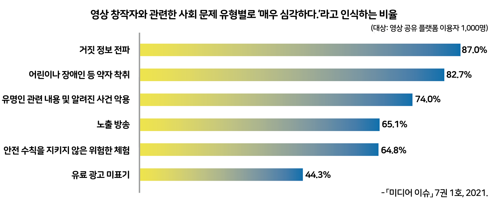

활동하기 영상 창작자의 직업윤리 지침 만들기
● 다음은 영상 창작자의 사회 문제에 관한 자료이다. 이 자료를 바탕으로 영상 창작자가 지켜야 할 직업윤리 지침을 만들어 발표해 보자.
남녀노소 누구나 쉽게 영상을 시청할 수 있는 영상 공유 플랫폼은 오늘날 거대한 대중 매체로 자리 잡게 되었다. 이에 따라 영상을 제작하는 영상 창작자의 위상이 매우 높아져 개인뿐만 아니라 사회 전반에까 지 큰 영향력을 미치고 있다. 하지만 구독자와 영상의 조회 수를 늘려 수익을 창출하는 영상 공유 플랫폼의 구조로 인해 일부 영상 창작자가 자극적인 소재로 영상을 제작하면서 여러 가지 사회 문제를 일으키기도 한다.
● 다음은 영상 창작자의 사회 문제에 관한 자료이다. 이 자료를 바탕으로 영상 창작자가 지켜야 할 직업윤리 지침을 만들어 발표해 보자.

● 다음은 영상 창작자의 사회 문제에 관한 자료이다. 이 자료를 바탕으로 영상 창작자가 지켜야 할 직업윤리 지침을 만들어 발표해 보자.
① 자신의 개인 방송에서 항상 진실성을 유지하고 가짜 뉴스를 만들지 말 아야 한다.
② 광고나 협찬이 포함되어 있을 경우 이를 명확하게 밝혀야 한다.
③ 타인의 명예를 훼손하거나 악의적 비방을 하지 말아야 한다.
④ 선정적이거나 사회에 유해한 방송을 하지 말아야 한다.
⑤ 경제적 이득을 얻기 위해 사회적 약자를 이용하는 방송을 하지 말아야 한다.